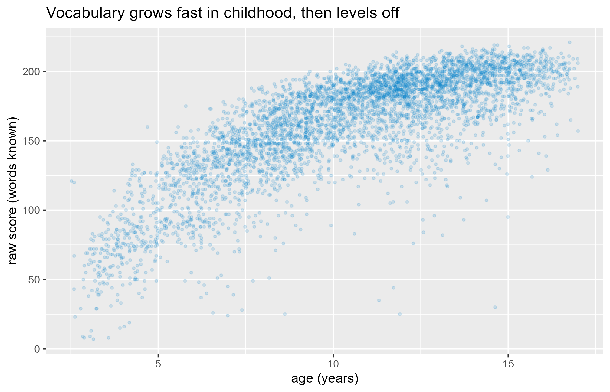
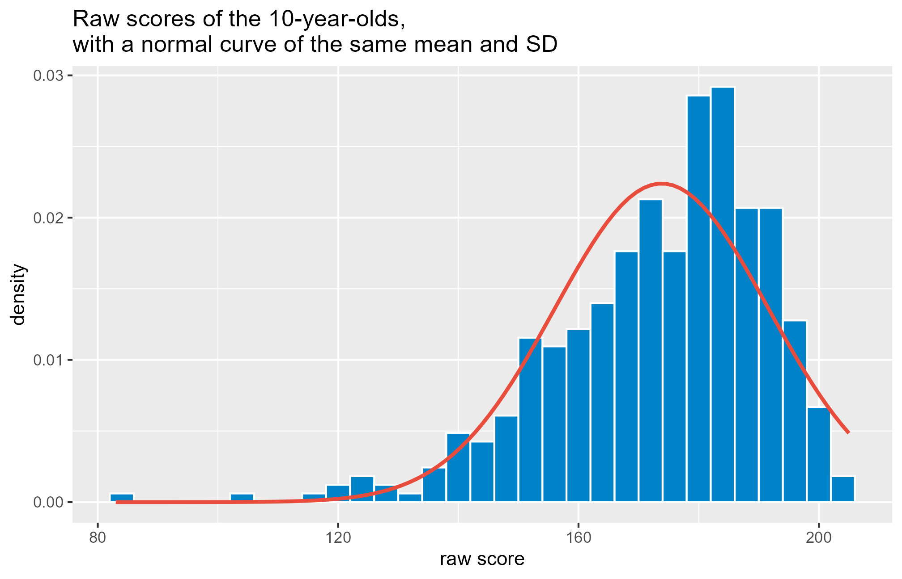
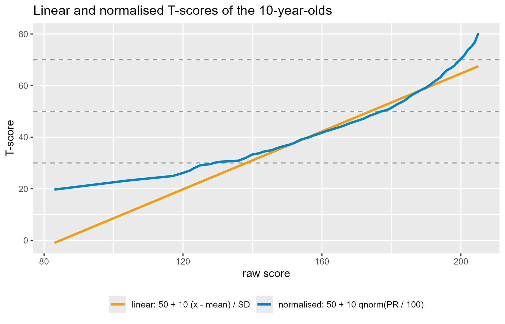
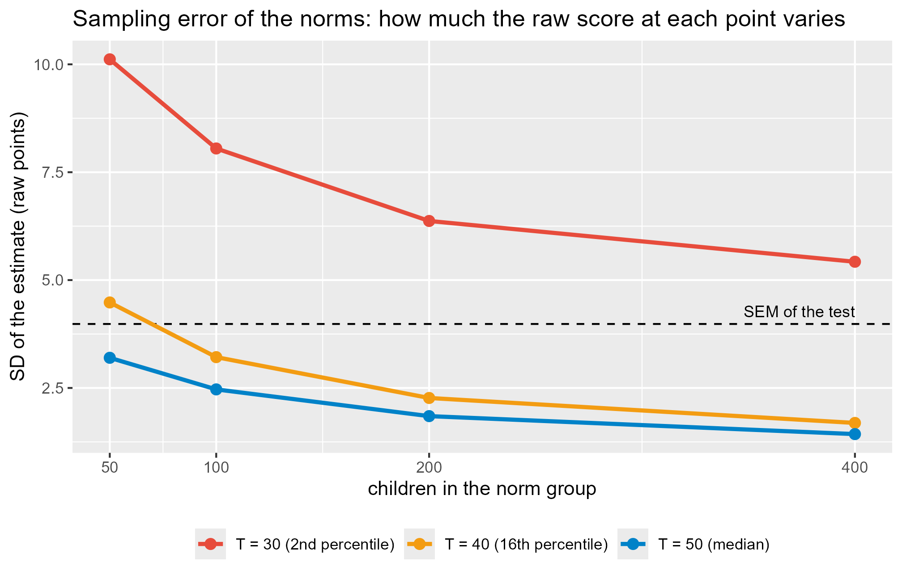
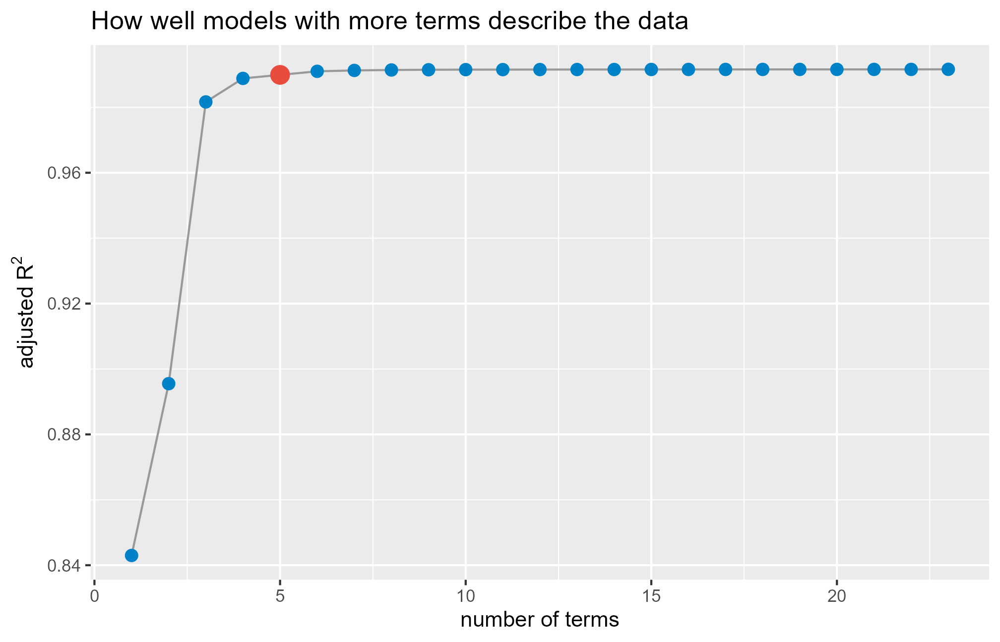
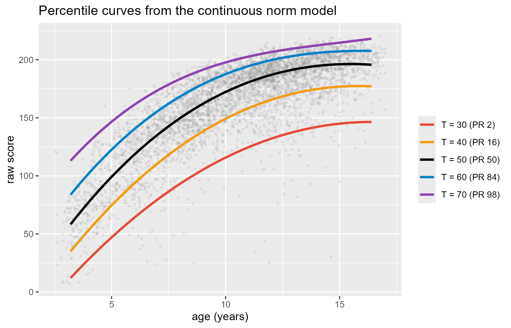
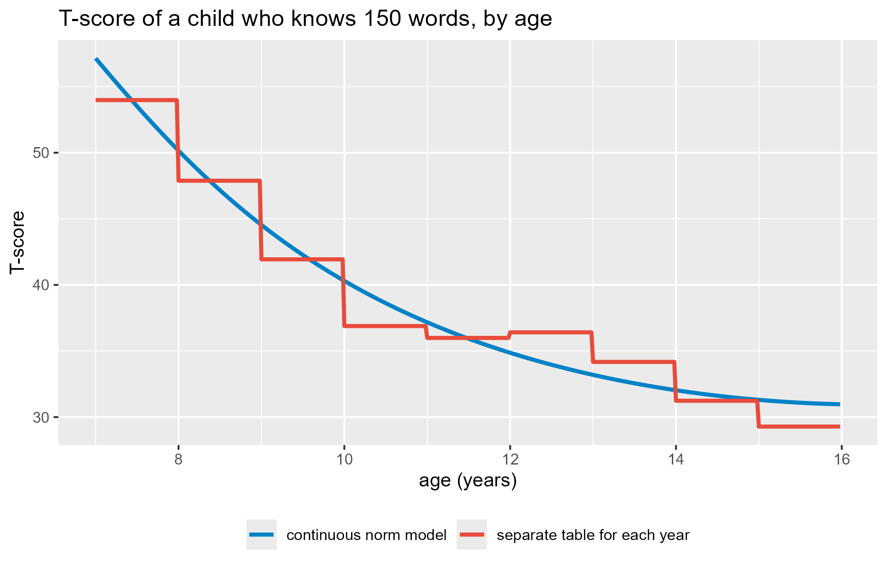

Code
library(cNORM) # continuous norming, and the example norm sample
library(snp) # the normal curve with the norm scales under it
library(ggplot2)A 10-year-old knows the meaning of 150 words in a vocabulary test. Is that good? On its own, the number says nothing. It depends on how many words other 10-year-olds know, and it would mean something very different for a 6-year-old or a 16-year-old.
Norms answer the question by comparing a person with a reference group, the norm sample: people like them (same age, here) who took the same test under the same conditions. A norm score says where the person stands in that group. There are two families of norm scores:
This tutorial builds both from a real norm sample, with the formulas and the R code, then makes a table like the one in a test manual, with confidence intervals, and finally builds age norms: smooth norms for every age at once.
The cNORM package ships with ppvt: scores of children and adolescents on the German adaptation of a picture vocabulary test. The tester says a word, and the child points to the one of four pictures that matches it. The raw score is the number of words the child knows (up to 228).
people youngest oldest
4542.0000 2.5202 16.9952 age_in_years
2 3 4 5 6 7 8 9 10 11 12 13 14 15 16
14 122 153 191 272 333 429 412 411 552 505 449 363 235 101 region
east north south west
4.5 5.1 63.9 26.6 female migration_background
48.7 27.7 A note on the data: ppvt is a practice dataset, not the published norm sample of the test. It was collected without stratification, and some cases were duplicated to even out the age groups. That makes it a good example of a problem real norm samples have, as we will see in section 5.

Two things matter for the norms. The average raw score changes a lot with age, so a 10-year-old must be compared with 10-year-olds. And the spread changes too: wide in the middle years, narrower near the top of the test. Section 6 deals with age. Until then we work with one age group.
The 411 children aged 10 years (10.00 to 10.99):
n mean sd median min max skewness
411.000000 173.832117 17.811028 177.000000 83.000000 205.000000 -1.067274 ggplot(age10, aes(raw)) +
geom_histogram(aes(y = after_stat(density)), binwidth = 4, fill = "#0082c8", colour = "white") +
stat_function(fun = dnorm, args = list(mean = mean(x), sd = sd(x)), colour = "#E74C3C", linewidth = 1) +
labs(title = "Raw scores of the 10-year-olds,\nwith a normal curve of the same mean and SD",
x = "raw score", y = "density")
The distribution is skewed to the left (skewness -1.07): most children know most of the words for their age, and a long tail of children knows far fewer. This matters in section 3.
The percentile rank (PR) of a raw score is the percentage of the norm group that scored lower. Many children share the same score, so the usual convention counts half of them as below (the mid-point convention):
\[\text{PR}(x) = 100 \times \frac{B(x) + \tfrac{1}{2} F(x)}{N}\]
Without the half, the lowest score would always get PR 0 and the highest could never reach 100, and the result would depend on whether ties are counted as below or above.
pr_table <- function(x) {
f <- table(x) # how many people have each score
score <- as.numeric(names(f))
below <- cumsum(f) - f # B(x): people below each score
data.frame(raw = score, n = as.numeric(f), below = as.numeric(below),
pr = as.numeric(100 * (below + 0.5 * f) / length(x)))
}
tab <- pr_table(x)
tab[tab$raw %in% c(min(x), 140, 150, 160, 170, 177, 180, 190, 200, max(x)), ] raw n below pr
1 83 1 0 0.1216545
16 140 1 19 4.7445255
25 150 2 38 9.4890511
35 160 7 80 20.3163017
45 170 6 143 35.5231144
52 177 6 202 49.8783455
55 180 13 222 55.5961071
65 190 8 334 82.2384428
75 200 1 402 97.9318735
80 205 1 410 99.8783455For example, 38 of the 411 children scored below 150 and 2 scored exactly 150, so
\[\text{PR}(150) = 100 \times \frac{38 + 2 / 2}{411} = 9.5\]
A 10-year-old with 150 words did better than about 9% of the children of their age.
Percentile ranks are easy to explain, but they are not equal steps. In the middle of the group, a few more words move a child many percentile points; in the tails, many words move them only a few. Differences between percentile ranks should not be averaged or compared as if they were distances.
Standard scores have equal steps. They all start from the z-score, the distance from the mean in standard deviations, and put it on a scale with a convenient mean and SD:
| Scale | Mean | SD | Formula | Usual range |
|---|---|---|---|---|
| z | 0 | 1 | \(z\) | −3 to 3 |
| T | 50 | 10 | \(50 + 10z\) | 20 to 80 |
| IQ-style | 100 | 15 | \(100 + 15z\) | 55 to 145 |
| Sten (“standard ten”) | 5.5 | 2 | \(5.5 + 2z\), whole numbers 1 to 10 | 1 to 10 |
| Stanine (“standard nine”) | 5 | 2 | \(5 + 2z\), whole numbers 1 to 9 | 1 to 9 |
There are two ways to get the z-score, and with a skewed distribution they disagree:
qnorm(pr / 100). It forces the scores into a normal shape, so that a T of 30 always means “about the lowest 2%”.# linear scores of every child, with compute_standard() of the rwf package, then one row per raw score
age10$z_linear <- compute_standard(x, type = "z") # (x - mean) / SD
age10$T_linear <- compute_standard(x, type = "t") # 50 + 10 z
tab$z_linear <- age10$z_linear[match(tab$raw, x)]
tab$T_linear <- age10$T_linear[match(tab$raw, x)]
# normalised scores, from the percentile rank
tab$z_norm <- qnorm(tab$pr / 100)
tab$T_norm <- 50 + 10 * tab$z_norm
round(tab[tab$raw %in% c(min(x), 120, 140, 160, 177, 190, 200, max(x)), c("raw", "pr", "T_linear", "T_norm")], 1) raw pr T_linear T_norm
1 83 0.1 -1.0 19.7
4 120 0.9 19.8 26.1
16 140 4.7 31.0 33.3
35 160 20.3 42.2 41.7
52 177 49.9 51.8 50.0
65 190 82.2 59.1 59.2
75 200 97.9 64.7 70.4
80 205 99.9 67.5 80.3The two disagree most in the tails:
long <- rbind(data.frame(raw = tab$raw, T = tab$T_linear, type = "linear: 50 + 10 (x - mean) / SD"),
data.frame(raw = tab$raw, T = tab$T_norm, type = "normalised: 50 + 10 qnorm(PR / 100)"))
ggplot(long, aes(raw, T, colour = type)) +
geom_hline(yintercept = c(30, 50, 70), linetype = "dashed", colour = "grey60") +
geom_line(linewidth = 1.1) +
scale_colour_manual(values = c("#f39c12", "#0082c8")) +
labs(title = "Linear and normalised T-scores of the 10-year-olds", x = "raw score", y = "T-score",
colour = NULL) +
theme(legend.position = "bottom")
Which to use? If the trait is believed to be normally distributed and the skew comes from the test (too easy, as here, or too hard), normalised scores are the usual choice: they mean the same thing on every test and at every age. If the skew is real and meaningful, linear scores keep it. Either way, say which you used. From here on we use normalised scores.
Because all of them are built on the normal curve, every scale can be read off every other. The snp package (sedzinfo.github.io/snp) draws the map:
Under the normal curve: 68% of people lie within one SD of the mean (T 40 to 60, IQ 85 to 115), 95% within two (T 30 to 70). A T of 70 and an IQ of 130 are the same score: about the top 2%. The GRADE row is a five-letter banding that some reports use instead of numbers.
Stens and stanines cut the z-scale into bands half an SD wide. Each band is centred on its own value: sten \(k\) covers \(5.5 + 2z\) from \(k - 0.5\) to \(k + 0.5\), which in R is floor(2 * z + 6); stanine \(k\) is floor(2 * z + 5.5). The ends are open: everything below the first band is 1, everything above the last is 10 (sten) or 9 (stanine).
to_sten <- function(z) pmin(pmax(floor(2 * z + 6), 1), 10)
to_stanine <- function(z) pmin(pmax(floor(2 * z + 5.5), 1), 9)
z_child <- qnorm(tab$pr[match(x, tab$raw)] / 100) # every child's normalised z
stanine <- to_stanine(z_child)
# stanines are often defined by fixed percentages: 4, 7, 12, 17, 20, 17, 12, 7 and 4%
stanine_pct <- c(4, 7, 12, 17, 20, 17, 12, 7, 4)
rbind(expected_percent = stanine_pct,
observed_percent = round(100 * as.numeric(table(factor(stanine, levels = 1:9))) / length(x), 1)) [,1] [,2] [,3] [,4] [,5] [,6] [,7] [,8] [,9]
expected_percent 4.0 7.0 12.0 17.0 20.0 17 12.0 7.0 4.0
observed_percent 3.6 6.8 12.2 17.3 20.4 17 12.2 6.1 4.4The fixed percentages are the areas of the normal curve between the stanine boundaries (\(z = \pm 0.25, \pm 0.75, \pm 1.25, \pm 1.75\)), rounded. The observed shares are close but not exact, because many children share a score and all of them must get the same stanine.
A test manual gives, for every raw score, the norm scores, usually with a confidence interval. No test is perfectly reliable: a child tested again would not get exactly the same score. The standard error of measurement (SEM) says how much scores vary from one testing to the next:
\[\text{SEM} = SD \times \sqrt{1 - r_{xx}}\]
where \(r_{xx}\) is the test’s reliability. On the T scale the SD is 10, so \(\text{SEM}_T = 10 \sqrt{1 - r_{xx}}\), and a 95% confidence interval is \(T \pm 1.96 \times \text{SEM}_T\). The practice data have no item responses to estimate the reliability from, so we assume \(r_{xx} = .95\), a typical value for a long vocabulary test. Use your own test’s estimate.
sem_T sem_raw ci95_halfwidth_T
2.236068 3.982667 4.382693 | Raw score | PR | T | 95% CI for T | IQ-style | Sten | Stanine |
|---|---|---|---|---|---|---|
| 83 | 0.1 | 20 | 15–24 | 55 | 1 | 1 |
| 140 | 4.7 | 33 | 29–38 | 75 | 2 | 2 |
| 145 | 6.4 | 35 | 30–39 | 77 | 2 | 2 |
| 150 | 9.5 | 37 | 33–41 | 80 | 3 | 2 |
| 155 | 14.6 | 39 | 35–44 | 84 | 3 | 3 |
| 160 | 20.3 | 42 | 37–46 | 88 | 4 | 3 |
| 165 | 27.0 | 44 | 39–48 | 91 | 4 | 4 |
| 170 | 35.5 | 46 | 42–51 | 94 | 5 | 4 |
| 175 | 45.6 | 49 | 45–53 | 98 | 5 | 5 |
| 180 | 55.6 | 51 | 47–56 | 102 | 6 | 5 |
| 185 | 70.9 | 56 | 51–60 | 108 | 7 | 6 |
| 190 | 82.2 | 59 | 55–64 | 114 | 7 | 7 |
| 195 | 92.8 | 65 | 60–69 | 122 | 8 | 8 |
| 200 | 97.9 | 70 | 66–75 | 131 | 10 | 9 |
| 205 | 99.9 | 80 | 76–85 | 145 | 10 | 9 |
A 10-year-old with 170 words has T = 46, 95% CI [42, 51]: a little below average on the point score, but the interval includes 50, so the test cannot tell this child apart from an average one. Reports that give only the point score suggest a precision the test does not have.
Two refinements are common in manuals. Some centre the interval on the estimated true score, \(50 + r_{xx}(T - 50)\), which is pulled slightly towards the mean. And many use 90% instead of 95% intervals. rawTable() of cNORM produces both kinds of table from a norm model (section 6).
The table has another flaw: the steps are uneven. Raw scores with many children jump, others barely move, and a single child more or less in the norm sample would change the values. Real norms are smoothed, which is one of the things continuous norming does.
The norm scores of the table are estimates from 411 children; another sample of 10-year-olds would give slightly different ones. How much? We draw many samples of a given size from the 10-year-olds (with replacement, a bootstrap) and see how much the raw score at three points of the scale varies: T = 30 (the 2nd percentile), T = 40 and T = 50 (the median).
set.seed(1)
targets <- c("T = 30 (2nd percentile)" = pnorm(-2), "T = 40 (16th percentile)" = pnorm(-1),
"T = 50 (median)" = 0.5)
sizes <- c(50, 100, 200, 400)
err <- expand.grid(n = sizes, point = names(targets), stringsAsFactors = FALSE)
err$sd_raw <- mapply(function(n, point) {
sd(replicate(2000, quantile(sample(x, n, replace = TRUE), targets[[point]])))
}, err$n, err$point)
err$point <- factor(err$point, levels = names(targets))
reshape(err, idvar = "point", timevar = "n", direction = "wide") point sd_raw.50 sd_raw.100 sd_raw.200 sd_raw.400
1 T = 30 (2nd percentile) 10.116168 8.050163 6.370151 5.424654
5 T = 40 (16th percentile) 4.481647 3.214380 2.267838 1.689409
9 T = 50 (median) 3.199054 2.466709 1.847321 1.430804ggplot(err, aes(n, sd_raw, colour = point)) +
geom_hline(yintercept = sem_raw, linetype = "dashed") +
annotate("text", x = 400, y = sem_raw, label = "SEM of the test", vjust = -0.6, hjust = 1, size = 3.2) +
geom_line(linewidth = 1.1) +
geom_point(size = 2.5) +
scale_x_continuous(breaks = sizes) +
scale_colour_manual(values = c("#E74C3C", "#f39c12", "#0082c8")) +
labs(title = "Sampling error of the norms: how much the raw score at each point varies",
x = "children in the norm group", y = "SD of the estimate (raw points)", colour = NULL) +
theme(legend.position = "bottom")
A few hundred people per norm group is a common minimum for separate tables, and the extremes need more. Continuous norming (section 6) needs fewer, because every age group helps to estimate the others.
Size is not enough: the sample must also be representative. Here 64% of the children come from the south, far more than the south’s share of the country’s children. If children from different regions score differently, the norms are biased, and a larger sample would not fix that. Norm samples are therefore stratified: drawn to match the population on age, sex, region, education and similar variables. When the sample does not match, cases can be weighted to the known population shares; computeWeights() of cNORM does this (raking), and the weights can be passed to cnorm().
The traditional solution is a table like the one in section 4 for every age group, say every year of age. Take a child with 150 words and look up their T-score in each year’s table:
t_in_band <- function(score, scores) { # normalised T of a score within a group
pr <- 100 * (mean(scores < score) + 0.5 * mean(scores == score))
50 + 10 * qnorm(pr / 100)
}
bands <- 7:15
band_T <- sapply(bands, function(a) t_in_band(150, ppvt$raw[floor(ppvt$age) == a]))
data.frame(age_group = paste0(bands, ".00-", bands, ".99"), n = as.numeric(table(floor(ppvt$age))[as.character(bands)]),
T_for_150_words = round(band_T, 1)) age_group n T_for_150_words
1 7.00-7.99 333 54.0
2 8.00-8.99 429 47.9
3 9.00-9.99 412 41.9
4 10.00-10.99 411 36.9
5 11.00-11.99 552 36.0
6 12.00-12.99 505 36.4
7 13.00-13.99 449 34.2
8 14.00-14.99 363 31.2
9 15.00-15.99 235 29.3The T-score for the same 150 words drops in steps, from one year’s table to the next. A child with 150 words gets T = 42 on the day before their 10th birthday and T = 37 on the day after: a drop of 5 T points overnight, more than the ±4.4 points of the test’s 95% confidence interval. In between, every child of 9.0 and 9.9 years is compared with the same table, although vocabulary grows within the year. And each table uses only the children of its own year, a few hundred at most.
Continuous (regression-based) norming fits one model for all ages together (Lenhard et al., 2018). The idea, in three steps:
The surface can then be read in both directions: the raw score for a given norm score and age (the percentile curves), or the norm score for a given raw score and age (the norm table). cnorm() does all three steps; ppvt$group holds the mean age of each child’s age group:
model_all <- cnorm(raw = ppvt$raw, group = ppvt$group, plot = FALSE) # all candidate models
adj_r2 <- model_all$model$subsets$adjr2
ggplot(data.frame(terms = seq_along(adj_r2), adj_r2), aes(terms, adj_r2)) +
geom_line(colour = "grey60") +
geom_point(colour = "#0082c8", size = 2.5) +
geom_point(data = data.frame(terms = 5, adj_r2 = adj_r2[5]), colour = "#E74C3C", size = 4) +
labs(title = "How well models with more terms describe the data", x = "number of terms",
y = expression("adjusted " * R^2))
By default cnorm() picks the largest model without inconsistencies (22 terms here). But adjusted \(R^2\) hardly grows after about 5 terms (0.9899 with 5, 0.9916 at most), and simpler models are smoother and less likely to bend strangely at the edges. We keep 5:
User specified solution: 5 terms
R-Square Adj. = 0.989925
Final regression model: raw ~ L3 + L1A1 + L2A1 + L1A2 + L3A3User specified solution: the number of terms, chosen by us with terms = 5 (without it, cNORM reports its own choice here).R-Square Adj.: the share of the variance of the raw scores the surface explains, given the age and the location of each child. Above .99 is typical for a good norm model.Final regression model: the terms. L1A1 is \(L \times A\), L2A1 is \(L^2 \times A\), and so on. The individual coefficients mean nothing by themselves; only the whole surface does.Always check that the percentile curves do not cross (a higher norm score must always need a higher raw score):
No relevant violations of model consistency found.The check covers ages 3.2 to 16.4 (the mean ages of the youngest and oldest groups) and T-scores 25 to 75. It returns TRUE if it finds curves that cross; here it returned FALSE. Outside the ages of the norm sample, the model extrapolates and should not be used.
For each T-score, the model gives the raw score needed at every age:
ages <- seq(3.2, 16.4, by = 0.1)
norms <- c(30, 40, 50, 60, 70)
curves <- do.call(rbind, lapply(norms, function(nt) data.frame(
age = ages, raw = sapply(ages, function(a) predictRaw(nt, a, model$model$coefficients)),
T = paste0("T = ", nt, " (PR ", sprintf("%.0f", 100 * pnorm((nt - 50) / 10)), ")"))))
curves$T <- factor(curves$T, levels = unique(curves$T))
ggplot(ppvt, aes(age, raw)) +
geom_point(alpha = 0.1, size = 0.7, colour = "grey50") +
geom_line(data = curves, aes(colour = T), linewidth = 1.1) +
scale_colour_manual(values = c("#E74C3C", "#f39c12", "black", "#0082c8", "#8E44AD")) +
labs(title = "Percentile curves from the continuous norm model", x = "age (years)",
y = "raw score", colour = NULL)
Each curve is a smooth line through all ages: the black one is the average child (T = 50), the red one the lowest 2%. The curves fan out in the middle years and come together at the top, where the test runs out of hard words.
fine_ages <- seq(7, 15.99, by = 0.02)
cont_T <- predictNorm(rep(150, length(fine_ages)), fine_ages, model)
comp <- rbind(data.frame(age = fine_ages, T = band_T[match(floor(fine_ages), bands)], method = "separate table for each year"),
data.frame(age = fine_ages, T = cont_T, method = "continuous norm model"))
ggplot(comp, aes(age, T, colour = method)) +
geom_line(linewidth = 1.1) +
scale_colour_manual(values = c("#0082c8", "#E74C3C")) +
labs(title = "T-score of a child who knows 150 words, by age", x = "age (years)", y = "T-score",
colour = NULL) +
theme(legend.position = "bottom")
day_before_10th_birthday day_after
40.3 40.3 The continuous model gives a T-score that falls smoothly with age: the same child gets the same score on either side of their birthday. The separate tables do not even fall steadily: from the 11-year-olds’ table to the 12-year-olds’ the T-score goes up, a fluke of two samples of a few hundred children each.
rawTable() gives the smoothed table for any exact age, here 10.5 years, with the 95% confidence intervals of section 4 computed for us. The model’s T-scores follow the empirical ones of section 4, without their jumps:
model_tab <- rawTable(10.5, model, step = 1, CI = 0.95, reliability = reliability)
scores <- c(140, 150, 165, 180, 195)
comparison <- data.frame(raw = scores,
T_one_year_table = tab$T_norm[match(scores, tab$raw)],
T_continuous_10.5 = model_tab$norm[match(scores, model_tab$raw)])
round(comparison, 1) raw T_one_year_table T_continuous_10.5
1 140 33.3 35.4
2 150 36.9 38.6
3 165 43.9 44.4
4 180 51.4 51.9
5 195 64.6 63.5A test manual or a report of norms (AERA et al., 2014) should describe the norm sample (size, when and where it was collected, how it was drawn, how well it matches the population), the norm scores and how they were derived (linear or normalised, separate tables or continuous norming, smoothing), the reliability and the SEM behind the confidence intervals, and the limits of the norms (ages covered, groups not represented). We collect the numbers from the R objects:
Method (norms):
Norms were derived from 4,542 children and adolescents aged 2.5 to 17.0 years (48.7% female; 27.7% with a migration background). Raw scores were converted into normalised T-scores (M = 50, SD = 10) with continuous norming (Lenhard et al., 2018): within 15 age groups, raw scores were ranked and transformed to normal scores, and the raw scores were then modelled as a polynomial function of the normal score and age. A model with 5 terms explained 99.0% of the variance (adjusted R² = .990), and its percentile curves did not intersect between 3.2 and 16.4 years. Confidence intervals are based on a reliability of .95 (SEM = 2.24 T points). Analyses were conducted in R (Version 4.6.2; R Core Team, 2026) with the cNORM package.
Table 1
Raw Scores Corresponding to Selected T-Scores by Age
| T | PR | 4 years | 6 years | 8 years | 10 years | 12 years | 14 years | 16 years |
|---|---|---|---|---|---|---|---|---|
| 30 | 2 | 28 | 64 | 93 | 116 | 132 | 142 | 146 |
| 40 | 16 | 53 | 94 | 125 | 149 | 166 | 175 | 177 |
| 50 | 50 | 77 | 118 | 150 | 172 | 187 | 195 | 196 |
| 60 | 84 | 102 | 140 | 168 | 188 | 200 | 206 | 208 |
| 70 | 98 | 129 | 161 | 183 | 198 | 207 | 212 | 217 |
Note. Raw scores predicted by the continuous norm model at the exact ages shown. PR = percentile rank. N = 4,542.
Points to remember:
citation("cNORM") in R gives the references.| Why norms | A raw score means something only compared with a reference group of similar people |
| Percentile rank | \(\text{PR} = 100\,(B + F/2) / N\), the mid-point convention; easy to explain, unequal steps |
| Standard scores | z; T = 50 + 10z; IQ-style = 100 + 15z; sten = 5.5 + 2z (1 to 10); stanine = 5 + 2z (1 to 9) |
| Linear or normalised | Linear: \((x - \bar x) / s\), keeps the skew. Normalised: qnorm(PR / 100), the same meaning everywhere |
| Confidence intervals | \(\text{SEM} = SD\sqrt{1 - r_{xx}}\); on the T scale \(T \pm 1.96 \times 10\sqrt{1 - r_{xx}}\) |
| Norm sample | Large (most error is in the tails) and representative (stratified, or weighted) |
| Age norms | Separate tables jump at the edges of the age groups; continuous norming gives smooth norms for every age |
| R | qnorm(), pnorm(); cNORM::cnorm(), predictNorm(), predictRaw(), rawTable(), checkConsistency(); snp::plot_normal() for the scales |
American Educational Research Association, American Psychological Association, & National Council on Measurement in Education. (2014). Standards for educational and psychological testing. American Educational Research Association.
Crocker, L., & Algina, J. (1986). Introduction to classical and modern test theory. Holt, Rinehart and Winston.
Kolen, M. J., & Brennan, R. L. (2014). Test equating, scaling, and linking: Methods and practices (3rd ed.). Springer.
Lenhard, A., Lenhard, W., & Gary, S. (2026). cNORM: Continuous norming (R package version 3.7.0). https://CRAN.R-project.org/package=cNORM
Lenhard, A., Lenhard, W., & Gary, S. (2019). Continuous norming of psychometric tests: A simulation study of parametric and semi-parametric approaches. PLoS ONE, 14(9), e0222279.
Lenhard, A., Lenhard, W., Suggate, S., & Segerer, R. (2018). A continuous solution to the norming problem. Assessment, 25(1), 112–125.
Lenhard, W., & Lenhard, A. (2021). Improvement of norm score quality via regression-based continuous norming. Educational and Psychological Measurement, 81(2), 229–261.
compute_skewness() and compute_standard() on this page---
title: "Test Norms in R: Percentiles, T-Scores, Stens and Age Norms"
description: "How to build test norms in R: percentile ranks, z, T, IQ, sten and stanine scores, confidence intervals from the SEM, and smooth age norms with cNORM."
author: ""
---
```{r options, echo=FALSE, warning=FALSE, message=FALSE}
directory<-if (rstudioapi::isAvailable()) paste0(dirname(rstudioapi::getActiveDocumentContext()$path),"/") else ""
source(paste0(directory, "R/code_options.R"))
source(paste0(directory, "R/code_rwf.R"))
# wider, shorter figures than the site default; no knitr cache: the page runs in seconds
knitr::opts_chunk$set(fig.height = 4.5, cache = FALSE)
```
## The problem: what does a raw score mean?
A 10-year-old knows the meaning of **150** words in a vocabulary test. Is that good? On its own, the number says nothing. It depends on how many words other 10-year-olds know, and it would mean something very different for a 6-year-old or a 16-year-old.
**Norms** answer the question by comparing a person with a **reference group**, the **norm sample**: people like them (same age, here) who took the same test under the same conditions. A norm score says where the person stands in that group. There are two families of norm scores:
- **Percentile ranks**: the percentage of the norm group scoring lower. Easy to explain, but the steps between them are unequal.
- **Standard scores**: the distance from the group's average in standard deviations, put on a convenient scale: z, T, IQ-style, sten, stanine.
This tutorial builds both from a real norm sample, with the formulas and the R code, then makes a table like the one in a test manual, with confidence intervals, and finally builds **age norms**: smooth norms for every age at once.
```{r packages}
library(cNORM) # continuous norming, and the example norm sample
library(snp) # the normal curve with the norm scales under it
library(ggplot2)
```
---
## 1. The norm sample
The `cNORM` package ships with `ppvt`: scores of children and adolescents on the German adaptation of a picture vocabulary test. The tester says a word, and the child points to the one of four pictures that matches it. The raw score is the number of words the child knows (up to 228).
```{r data}
data(ppvt, package = "cNORM")
c(people = nrow(ppvt), youngest = min(ppvt$age), oldest = max(ppvt$age))
table(age_in_years = floor(ppvt$age))
round(100 * prop.table(table(region = ppvt$region)), 1)
round(100 * c(female = mean(ppvt$sex == 2), migration_background = mean(ppvt$migration == 1)), 1)
```
A note on the data: `ppvt` is a practice dataset, not the published norm sample of the test. It was collected without stratification, and some cases were duplicated to even out the age groups. That makes it a good example of a problem real norm samples have, as we will see in section 5.
```{r raw_by_age}
ggplot(ppvt, aes(age, raw)) +
geom_point(alpha = 0.15, size = 0.8, colour = "#0082c8") +
labs(title = "Vocabulary grows fast in childhood, then levels off", x = "age (years)",
y = "raw score (words known)")
```
Two things matter for the norms. The average raw score changes a lot with **age**, so a 10-year-old must be compared with 10-year-olds. And the **spread** changes too: wide in the middle years, narrower near the top of the test. Section 6 deals with age. Until then we work with one age group.
---
## 2. One age group: percentile ranks
The `r nrow(subset(ppvt, age >= 10 & age < 11))` children aged 10 years (10.00 to 10.99):
```{r age10}
age10 <- subset(ppvt, age >= 10 & age < 11)
x <- age10$raw
c(n = length(x), mean = mean(x), sd = sd(x), median = median(x), min = min(x), max = max(x),
skewness = compute_skewness(x)) # compute_skewness() is from rwf
```
```{r age10_histogram}
ggplot(age10, aes(raw)) +
geom_histogram(aes(y = after_stat(density)), binwidth = 4, fill = "#0082c8", colour = "white") +
stat_function(fun = dnorm, args = list(mean = mean(x), sd = sd(x)), colour = "#E74C3C", linewidth = 1) +
labs(title = "Raw scores of the 10-year-olds,\nwith a normal curve of the same mean and SD",
x = "raw score", y = "density")
```
The distribution is **skewed to the left** (skewness `r sprintf("%.2f", compute_skewness(x))`): most children know most of the words for their age, and a long tail of children knows far fewer. This matters in section 3.
### The percentile rank
The percentile rank (PR) of a raw score is the percentage of the norm group that scored lower. Many children share the same score, so the usual convention counts **half** of them as below (the **mid-point** convention):
$$\text{PR}(x) = 100 \times \frac{B(x) + \tfrac{1}{2} F(x)}{N}$$
- $B(x)$: the number of people who scored **below** $x$;
- $F(x)$: the number of people who scored **exactly** $x$;
- $N$: the size of the norm group.
Without the half, the lowest score would always get PR 0 and the highest could never reach 100, and the result would depend on whether ties are counted as below or above.
```{r percentile_rank}
pr_table <- function(x) {
f <- table(x) # how many people have each score
score <- as.numeric(names(f))
below <- cumsum(f) - f # B(x): people below each score
data.frame(raw = score, n = as.numeric(f), below = as.numeric(below),
pr = as.numeric(100 * (below + 0.5 * f) / length(x)))
}
tab <- pr_table(x)
tab[tab$raw %in% c(min(x), 140, 150, 160, 170, 177, 180, 190, 200, max(x)), ]
```
For example, `r tab$below[tab$raw == 150]` of the `r length(x)` children scored below 150 and `r tab$n[tab$raw == 150]` scored exactly 150, so
$$\text{PR}(150) = 100 \times \frac{`r tab$below[tab$raw == 150]` + `r tab$n[tab$raw == 150]` / 2}{`r length(x)`} = `r sprintf("%.1f", tab$pr[tab$raw == 150])`$$
A 10-year-old with 150 words did better than about `r round(tab$pr[tab$raw == 150])`% of the children of their age.
Percentile ranks are easy to explain, but they are **not equal steps**. In the middle of the group, a few more words move a child many percentile points; in the tails, many words move them only a few. Differences between percentile ranks should not be averaged or compared as if they were distances.
---
## 3. Standard scores: z, T, IQ, sten and stanine
Standard scores have equal steps. They all start from the **z-score**, the distance from the mean in standard deviations, and put it on a scale with a convenient mean and SD:
| Scale | Mean | SD | Formula | Usual range |
|---|---|---|---|---|
| z | 0 | 1 | $z$ | −3 to 3 |
| T | 50 | 10 | $50 + 10z$ | 20 to 80 |
| IQ-style | 100 | 15 | $100 + 15z$ | 55 to 145 |
| Sten ("standard ten") | 5.5 | 2 | $5.5 + 2z$, whole numbers 1 to 10 | 1 to 10 |
| Stanine ("standard nine") | 5 | 2 | $5 + 2z$, whole numbers 1 to 9 | 1 to 9 |
### Linear or normalised?
There are two ways to get the z-score, and with a skewed distribution they disagree:
- **Linear**: $z = (x - \bar x) / s$, from the mean $\bar x$ and SD $s$ of the norm group. It keeps the shape of the raw distribution, skew included.
- **Normalised** (area-transformed): $z = \Phi^{-1}(\text{PR} / 100)$, the z-score that has the same percentile rank in a normal distribution. In R, `qnorm(pr / 100)`. It forces the scores into a normal shape, so that a T of 30 always means "about the lowest 2%".
```{r standard_scores}
# linear scores of every child, with compute_standard() of the rwf package, then one row per raw score
age10$z_linear <- compute_standard(x, type = "z") # (x - mean) / SD
age10$T_linear <- compute_standard(x, type = "t") # 50 + 10 z
tab$z_linear <- age10$z_linear[match(tab$raw, x)]
tab$T_linear <- age10$T_linear[match(tab$raw, x)]
# normalised scores, from the percentile rank
tab$z_norm <- qnorm(tab$pr / 100)
tab$T_norm <- 50 + 10 * tab$z_norm
round(tab[tab$raw %in% c(min(x), 120, 140, 160, 177, 190, 200, max(x)), c("raw", "pr", "T_linear", "T_norm")], 1)
```
The two disagree most in the **tails**:
- The weakest child (`r min(x)` words) gets a **linear** T of `r sprintf("%.1f", tab$T_linear[1])`, an impossible value far below the usual scale, because the long left tail stretches the SD. The **normalised** T is `r sprintf("%.1f", tab$T_norm[1])`: still very low, but on the scale.
- The best child (`r max(x)` words) gets a linear T of only `r sprintf("%.1f", tab$T_linear[nrow(tab)])`, although nobody of their age scored higher; the normalised T is `r sprintf("%.1f", tab$T_norm[nrow(tab)])`.
```{r linear_vs_normalised}
long <- rbind(data.frame(raw = tab$raw, T = tab$T_linear, type = "linear: 50 + 10 (x - mean) / SD"),
data.frame(raw = tab$raw, T = tab$T_norm, type = "normalised: 50 + 10 qnorm(PR / 100)"))
ggplot(long, aes(raw, T, colour = type)) +
geom_hline(yintercept = c(30, 50, 70), linetype = "dashed", colour = "grey60") +
geom_line(linewidth = 1.1) +
scale_colour_manual(values = c("#f39c12", "#0082c8")) +
labs(title = "Linear and normalised T-scores of the 10-year-olds", x = "raw score", y = "T-score",
colour = NULL) +
theme(legend.position = "bottom")
```
Which to use? If the trait is believed to be normally distributed and the skew comes from the test (too easy, as here, or too hard), **normalised** scores are the usual choice: they mean the same thing on every test and at every age. If the skew is real and meaningful, linear scores keep it. Either way, say which you used. From here on we use normalised scores.
### The map between the scales
Because all of them are built on the normal curve, every scale can be read off every other. The snp package ([sedzinfo.github.io/snp](https://sedzinfo.github.io/snp/)) draws the map:
```{r normal_scales, fig.height = snp::plot_normal_height(width = 7)}
plot_normal()
```
Under the normal curve: 68% of people lie within one SD of the mean (T 40 to 60, IQ 85 to 115), 95% within two (T 30 to 70). A T of 70 and an IQ of 130 are the same score: about the top 2%. The GRADE row is a five-letter banding that some reports use instead of numbers.
### Stens and stanines: bands, not points
Stens and stanines cut the z-scale into bands half an SD wide. Each band is centred on its own value: sten $k$ covers $5.5 + 2z$ from $k - 0.5$ to $k + 0.5$, which in R is `floor(2 * z + 6)`; stanine $k$ is `floor(2 * z + 5.5)`. The ends are open: everything below the first band is 1, everything above the last is 10 (sten) or 9 (stanine).
```{r sten_stanine}
to_sten <- function(z) pmin(pmax(floor(2 * z + 6), 1), 10)
to_stanine <- function(z) pmin(pmax(floor(2 * z + 5.5), 1), 9)
z_child <- qnorm(tab$pr[match(x, tab$raw)] / 100) # every child's normalised z
stanine <- to_stanine(z_child)
# stanines are often defined by fixed percentages: 4, 7, 12, 17, 20, 17, 12, 7 and 4%
stanine_pct <- c(4, 7, 12, 17, 20, 17, 12, 7, 4)
rbind(expected_percent = stanine_pct,
observed_percent = round(100 * as.numeric(table(factor(stanine, levels = 1:9))) / length(x), 1))
```
The fixed percentages are the areas of the normal curve between the stanine boundaries ($z = \pm 0.25, \pm 0.75, \pm 1.25, \pm 1.75$), rounded. The observed shares are close but not exact, because many children share a score and all of them must get the same stanine.
---
## 4. A conversion table, like a test manual
A test manual gives, for every raw score, the norm scores, usually with a **confidence interval**. No test is perfectly reliable: a child tested again would not get exactly the same score. The **standard error of measurement** (SEM) says how much scores vary from one testing to the next:
$$\text{SEM} = SD \times \sqrt{1 - r_{xx}}$$
where $r_{xx}$ is the test's reliability. On the T scale the SD is 10, so $\text{SEM}_T = 10 \sqrt{1 - r_{xx}}$, and a 95% confidence interval is $T \pm 1.96 \times \text{SEM}_T$. The practice data have no item responses to estimate the reliability from, so we assume $r_{xx} = .95$, a typical value for a long vocabulary test. Use your own test's estimate.
```{r conversion_table}
reliability <- 0.95
sem_T <- 10 * sqrt(1 - reliability) # SEM on the T scale
sem_raw <- sd(x) * sqrt(1 - reliability) # the same in raw-score points
c(sem_T = sem_T, sem_raw = sem_raw, ci95_halfwidth_T = 1.96 * sem_T)
manual <- data.frame(raw = tab$raw, PR = tab$pr, T = tab$T_norm)
manual$T_low <- manual$T - 1.96 * sem_T
manual$T_high <- manual$T + 1.96 * sem_T
manual$IQ <- 100 + 15 * tab$z_norm
manual$sten <- to_sten(tab$z_norm)
manual$stanine <- to_stanine(tab$z_norm)
```
```{r conversion_table_print, echo=FALSE}
show <- manual[manual$raw %in% c(seq(130, 200, by = 5), min(x), max(x)), ]
knitr::kable(data.frame(Raw = show$raw, PR = sprintf("%.1f", show$PR), T = sprintf("%.0f", show$T),
CI = sprintf("%.0f–%.0f", show$T_low, show$T_high), IQ = sprintf("%.0f", show$IQ),
Sten = show$sten, Stanine = show$stanine),
col.names = c("Raw score", "PR", "T", "95% CI for T", "IQ-style", "Sten", "Stanine"),
align = "rrrrrrr", format = "pipe", row.names = FALSE)
```
### How to read the table
- **Raw score**: the number of words the child knows (only some rows are shown).
- **PR**: the percentage of 10-year-olds scoring lower.
- **T**, **IQ-style**, **Sten**, **Stanine**: the normalised standard scores.
- **95% CI for T**: the range in which the child's score would fall in 95 of 100 testings, given the reliability of the test. With $r_{xx}$ = .95 it is about ±`r sprintf("%.1f", 1.96 * sem_T)` T points.
A 10-year-old with 170 words has T = `r sprintf("%.0f", manual$T[manual$raw == 170])`, 95% CI [`r sprintf("%.0f", manual$T_low[manual$raw == 170])`, `r sprintf("%.0f", manual$T_high[manual$raw == 170])`]: a little below average on the point score, but the interval includes 50, so the test cannot tell this child apart from an average one. Reports that give only the point score suggest a precision the test does not have.
Two refinements are common in manuals. Some centre the interval on the **estimated true score**, $50 + r_{xx}(T - 50)$, which is pulled slightly towards the mean. And many use 90% instead of 95% intervals. `rawTable()` of cNORM produces both kinds of table from a norm model (section 6).
The table has another flaw: the steps are uneven. Raw scores with many children jump, others barely move, and a single child more or less in the norm sample would change the values. Real norms are **smoothed**, which is one of the things continuous norming does.
---
## 5. How large must a norm group be, and who must be in it?
The norm scores of the table are estimates from `r length(x)` children; another sample of 10-year-olds would give slightly different ones. How much? We draw many samples of a given size from the 10-year-olds (with replacement, a **bootstrap**) and see how much the raw score at three points of the scale varies: T = 30 (the 2nd percentile), T = 40 and T = 50 (the median).
```{r norm_sample_size}
set.seed(1)
targets <- c("T = 30 (2nd percentile)" = pnorm(-2), "T = 40 (16th percentile)" = pnorm(-1),
"T = 50 (median)" = 0.5)
sizes <- c(50, 100, 200, 400)
err <- expand.grid(n = sizes, point = names(targets), stringsAsFactors = FALSE)
err$sd_raw <- mapply(function(n, point) {
sd(replicate(2000, quantile(sample(x, n, replace = TRUE), targets[[point]])))
}, err$n, err$point)
err$point <- factor(err$point, levels = names(targets))
reshape(err, idvar = "point", timevar = "n", direction = "wide")
```
```{r norm_sample_size_plot}
ggplot(err, aes(n, sd_raw, colour = point)) +
geom_hline(yintercept = sem_raw, linetype = "dashed") +
annotate("text", x = 400, y = sem_raw, label = "SEM of the test", vjust = -0.6, hjust = 1, size = 3.2) +
geom_line(linewidth = 1.1) +
geom_point(size = 2.5) +
scale_x_continuous(breaks = sizes) +
scale_colour_manual(values = c("#E74C3C", "#f39c12", "#0082c8")) +
labs(title = "Sampling error of the norms: how much the raw score at each point varies",
x = "children in the norm group", y = "SD of the estimate (raw points)", colour = NULL) +
theme(legend.position = "bottom")
```
- The error shrinks with the size of the norm group, roughly as $1 / \sqrt{n}$.
- It is much larger in the **tails**. With `r sizes[2]` children, the raw score that marks T = 30 varies by about `r sprintf("%.1f", err$sd_raw[err$n == 100 & err$point == names(targets)[1]])` points, against `r sprintf("%.1f", err$sd_raw[err$n == 100 & err$point == names(targets)[3]])` at the median. Yet the tails are where decisions are made (a learning difficulty, a giftedness programme).
- In the tails the error of the **norms** is larger than the measurement error of the **test** (the dashed line) even with `r max(sizes)` children, and the two add up.
A few hundred people per norm group is a common minimum for separate tables, and the extremes need more. Continuous norming (section 6) needs fewer, because every age group helps to estimate the others.
**Size is not enough: the sample must also be representative.** Here `r round(100 * mean(ppvt$region == "south"))`% of the children come from the south, far more than the south's share of the country's children. If children from different regions score differently, the norms are biased, and a larger sample would not fix that. Norm samples are therefore **stratified**: drawn to match the population on age, sex, region, education and similar variables. When the sample does not match, cases can be **weighted** to the known population shares; `computeWeights()` of cNORM does this (raking), and the weights can be passed to `cnorm()`.
---
## 6. Age norms
### Separate tables per age group, and their problem
The traditional solution is a table like the one in section 4 for every age group, say every year of age. Take a child with 150 words and look up their T-score in each year's table:
```{r age_bands}
t_in_band <- function(score, scores) { # normalised T of a score within a group
pr <- 100 * (mean(scores < score) + 0.5 * mean(scores == score))
50 + 10 * qnorm(pr / 100)
}
bands <- 7:15
band_T <- sapply(bands, function(a) t_in_band(150, ppvt$raw[floor(ppvt$age) == a]))
data.frame(age_group = paste0(bands, ".00-", bands, ".99"), n = as.numeric(table(floor(ppvt$age))[as.character(bands)]),
T_for_150_words = round(band_T, 1))
```
The T-score for the same 150 words drops in steps, from one year's table to the next. A child with 150 words gets T = `r sprintf("%.0f", band_T[bands == 9])` on the day before their 10th birthday and T = `r sprintf("%.0f", band_T[bands == 10])` on the day after: a drop of `r sprintf("%.0f", band_T[bands == 9] - band_T[bands == 10])` T points overnight, more than the ±`r sprintf("%.1f", 1.96 * sem_T)` points of the test's 95% confidence interval. In between, every child of 9.0 and 9.9 years is compared with the same table, although vocabulary grows within the year. And each table uses only the children of its own year, a few hundred at most.
### Continuous norming
**Continuous** (regression-based) norming fits one model for all ages together (Lenhard et al., 2018). The idea, in three steps:
1. Within each age group, give every child their normalised score, as in section 3. cNORM calls it the **location** $L$ (on the T scale here).
2. Fit a regression of the **raw score** on powers of $L$, powers of age $A$, and their products:
$$\text{raw} = \sum_{s=0}^{k}\sum_{t=0}^{k} c_{st}\, L^s A^t$$
This is a smooth surface: for every age and every norm score it gives the raw score.
3. Keep only the terms that matter, chosen by how much they add to $R^2$.
The surface can then be read in both directions: the raw score for a given norm score and age (the percentile curves), or the norm score for a given raw score and age (the norm table). `cnorm()` does all three steps; `ppvt$group` holds the mean age of each child's age group:
```{r cnorm_all_terms}
model_all <- cnorm(raw = ppvt$raw, group = ppvt$group, plot = FALSE) # all candidate models
adj_r2 <- model_all$model$subsets$adjr2
ggplot(data.frame(terms = seq_along(adj_r2), adj_r2), aes(terms, adj_r2)) +
geom_line(colour = "grey60") +
geom_point(colour = "#0082c8", size = 2.5) +
geom_point(data = data.frame(terms = 5, adj_r2 = adj_r2[5]), colour = "#E74C3C", size = 4) +
labs(title = "How well models with more terms describe the data", x = "number of terms",
y = expression("adjusted " * R^2))
```
By default `cnorm()` picks the **largest** model without inconsistencies (`r length(attr(model_all$model$terms, "term.labels"))` terms here). But adjusted $R^2$ hardly grows after about 5 terms (`r sprintf("%.4f", adj_r2[5])` with 5, `r sprintf("%.4f", max(adj_r2))` at most), and simpler models are smoother and less likely to bend strangely at the edges. We keep 5:
```{r cnorm_model}
model <- cnorm(raw = ppvt$raw, group = ppvt$group, terms = 5, plot = FALSE)
cat(model$model$report[1:3], sep = "\n")
```
- **`User specified solution`**: the number of terms, chosen by us with `terms = 5` (without it, cNORM reports its own choice here).
- **`R-Square Adj.`**: the share of the variance of the raw scores the surface explains, given the age and the location of each child. Above .99 is typical for a good norm model.
- **`Final regression model`**: the terms. `L1A1` is $L \times A$, `L2A1` is $L^2 \times A$, and so on. The individual coefficients mean nothing by themselves; only the whole surface does.
Always check that the percentile curves do not cross (a higher norm score must always need a higher raw score):
```{r consistency}
crossing <- checkConsistency(model, minAge = 3.2, maxAge = 16.4, minNorm = 25, maxNorm = 75)
```
The check covers ages 3.2 to 16.4 (the mean ages of the youngest and oldest groups) and T-scores 25 to 75. It returns `TRUE` if it finds curves that cross; here it returned `r crossing`. Outside the ages of the norm sample, the model extrapolates and should not be used.
### Percentile curves
For each T-score, the model gives the raw score needed at every age:
```{r percentile_curves}
ages <- seq(3.2, 16.4, by = 0.1)
norms <- c(30, 40, 50, 60, 70)
curves <- do.call(rbind, lapply(norms, function(nt) data.frame(
age = ages, raw = sapply(ages, function(a) predictRaw(nt, a, model$model$coefficients)),
T = paste0("T = ", nt, " (PR ", sprintf("%.0f", 100 * pnorm((nt - 50) / 10)), ")"))))
curves$T <- factor(curves$T, levels = unique(curves$T))
ggplot(ppvt, aes(age, raw)) +
geom_point(alpha = 0.1, size = 0.7, colour = "grey50") +
geom_line(data = curves, aes(colour = T), linewidth = 1.1) +
scale_colour_manual(values = c("#E74C3C", "#f39c12", "black", "#0082c8", "#8E44AD")) +
labs(title = "Percentile curves from the continuous norm model", x = "age (years)",
y = "raw score", colour = NULL)
```
Each curve is a smooth line through all ages: the black one is the average child (T = 50), the red one the lowest 2%. The curves fan out in the middle years and come together at the top, where the test runs out of hard words.
### The birthday problem, solved
```{r band_vs_continuous}
fine_ages <- seq(7, 15.99, by = 0.02)
cont_T <- predictNorm(rep(150, length(fine_ages)), fine_ages, model)
comp <- rbind(data.frame(age = fine_ages, T = band_T[match(floor(fine_ages), bands)], method = "separate table for each year"),
data.frame(age = fine_ages, T = cont_T, method = "continuous norm model"))
ggplot(comp, aes(age, T, colour = method)) +
geom_line(linewidth = 1.1) +
scale_colour_manual(values = c("#0082c8", "#E74C3C")) +
labs(title = "T-score of a child who knows 150 words, by age", x = "age (years)", y = "T-score",
colour = NULL) +
theme(legend.position = "bottom")
round(c(day_before_10th_birthday = predictNorm(150, 9.99, model), day_after = predictNorm(150, 10.01, model)), 1)
```
The continuous model gives a T-score that falls smoothly with age: the same child gets the same score on either side of their birthday. The separate tables do not even fall steadily: from the 11-year-olds' table to the 12-year-olds' the T-score goes **up**, a fluke of two samples of a few hundred children each.
### The norm table from the model
`rawTable()` gives the smoothed table for any exact age, here 10.5 years, with the 95% confidence intervals of section 4 computed for us. The model's T-scores follow the empirical ones of section 4, without their jumps:
```{r model_table}
model_tab <- rawTable(10.5, model, step = 1, CI = 0.95, reliability = reliability)
scores <- c(140, 150, 165, 180, 195)
comparison <- data.frame(raw = scores,
T_one_year_table = tab$T_norm[match(scores, tab$raw)],
T_continuous_10.5 = model_tab$norm[match(scores, model_tab$raw)])
round(comparison, 1)
```
---
## 7. Reporting norms
A test manual or a report of norms (AERA et al., 2014) should describe the norm sample (size, when and where it was collected, how it was drawn, how well it matches the population), the norm scores and how they were derived (linear or normalised, separate tables or continuous norming, smoothing), the reliability and the SEM behind the confidence intervals, and the limits of the norms (ages covered, groups not represented). We collect the numbers from the R objects:
```{r apa_numbers}
f2 <- function(x) formatC(x, format = "f", digits = 2)
r2 <- model$model$subsets$adjr2[5]
```
**Method** (norms):
> Norms were derived from `r format(nrow(ppvt), big.mark = ",")` children and adolescents aged `r sprintf("%.1f", min(ppvt$age))` to `r sprintf("%.1f", max(ppvt$age))` years (`r sprintf("%.1f", 100 * mean(ppvt$sex == 2))`% female; `r sprintf("%.1f", 100 * mean(ppvt$migration == 1))`% with a migration background). Raw scores were converted into normalised T-scores (*M* = 50, *SD* = 10) with continuous norming (Lenhard et al., 2018): within `r length(unique(ppvt$group))` age groups, raw scores were ranked and transformed to normal scores, and the raw scores were then modelled as a polynomial function of the normal score and age. A model with 5 terms explained `r sprintf("%.1f", 100 * r2)`% of the variance (adjusted *R*² = `r sub("^0", "", sprintf("%.3f", r2))`), and its percentile curves did not intersect between 3.2 and 16.4 years. Confidence intervals are based on a reliability of `r sub("^0", "", sprintf("%.2f", reliability))` (*SEM* = `r f2(sem_T)` T points). Analyses were conducted in R (Version `r paste(R.version$major, R.version$minor, sep = ".")`; R Core Team, `r R.version$year`) with the *cNORM* package.
**Table 1**
*Raw Scores Corresponding to Selected T-Scores by Age*
```{r apa_table, echo=FALSE}
table_ages <- c(4, 6, 8, 10, 12, 14, 16)
table_T <- c(30, 40, 50, 60, 70)
raw_at <- sapply(table_ages, function(a) sapply(table_T, function(nt) predictRaw(nt, a, model$model$coefficients)))
out <- data.frame(T = table_T, PR = sprintf("%.0f", 100 * pnorm((table_T - 50) / 10)),
matrix(sprintf("%.0f", raw_at), nrow = length(table_T)))
knitr::kable(out, col.names = c("*T*", "PR", paste(table_ages, "years")), align = "rrrrrrrrr",
format = "pipe", row.names = FALSE)
```
*Note.* Raw scores predicted by the continuous norm model at the exact ages shown. PR = percentile rank. *N* = `r format(nrow(ppvt), big.mark = ",")`.
**Points to remember:**
- Describe the **norm sample**: size per age group, how it was drawn, and how well it matches the population (and any weighting).
- Say whether scores are **linear** or **normalised**, and how they were smoothed.
- Give **confidence intervals**, and the reliability and SEM they are based on.
- Do not use norms outside the ages, or for groups, that the norm sample does not cover. Norms also age: as a population changes, norms collected many years ago become too easy or too hard.
- Cite R and the packages; `citation("cNORM")` in R gives the references.
---
## 8. Summary
| | |
|---|---|
| **Why norms** | A raw score means something only compared with a reference group of similar people |
| **Percentile rank** | $\text{PR} = 100\,(B + F/2) / N$, the mid-point convention; easy to explain, unequal steps |
| **Standard scores** | z; T = 50 + 10z; IQ-style = 100 + 15z; sten = 5.5 + 2z (1 to 10); stanine = 5 + 2z (1 to 9) |
| **Linear or normalised** | Linear: $(x - \bar x) / s$, keeps the skew. Normalised: `qnorm(PR / 100)`, the same meaning everywhere |
| **Confidence intervals** | $\text{SEM} = SD\sqrt{1 - r_{xx}}$; on the T scale $T \pm 1.96 \times 10\sqrt{1 - r_{xx}}$ |
| **Norm sample** | Large (most error is in the tails) and representative (stratified, or weighted) |
| **Age norms** | Separate tables jump at the edges of the age groups; continuous norming gives smooth norms for every age |
| **R** | `qnorm()`, `pnorm()`; `cNORM::cnorm()`, `predictNorm()`, `predictRaw()`, `rawTable()`, `checkConsistency()`; `snp::plot_normal()` for the scales |
---
## References
American Educational Research Association, American Psychological Association, & National Council on Measurement in Education. (2014). *Standards for educational and psychological testing*. American Educational Research Association.
Crocker, L., & Algina, J. (1986). *Introduction to classical and modern test theory*. Holt, Rinehart and Winston.
Kolen, M. J., & Brennan, R. L. (2014). *Test equating, scaling, and linking: Methods and practices* (3rd ed.). Springer.
Lenhard, A., Lenhard, W., & Gary, S. (`r format(as.Date(packageDescription("cNORM")[["Date/Publication"]]), "%Y")`). *cNORM: Continuous norming* (R package version `r packageDescription("cNORM")[["Version"]]`). https://CRAN.R-project.org/package=cNORM
Lenhard, A., Lenhard, W., & Gary, S. (2019). Continuous norming of psychometric tests: A simulation study of parametric and semi-parametric approaches. *PLoS ONE*, *14*(9), e0222279.
Lenhard, A., Lenhard, W., Suggate, S., & Segerer, R. (2018). A continuous solution to the norming problem. *Assessment*, *25*(1), 112–125.
Lenhard, W., & Lenhard, A. (2021). Improvement of norm score quality via regression-based continuous norming. *Educational and Psychological Measurement*, *81*(2), 229–261.